farming regeneratively in tandem with nature
our enterprises

About Drivers Farms
In the heart of Sawston the Molton family have been farming at Drivers Farms since 1961, for almost three generations. The farm was originally operated by Harold 'John' Molton, operating a
milking herd of red and white Freisian cattle up until 1983. However, due to the evolution of the milking sector in the late 20th century, Harold and his son,
Richard, decided to change tac and began rearing a herd of Pedigree Limousin beef cattle. The herd in question has been a mainstay at the farm since its fruition, grazing the permanent meadowland
around the farmyard in the summer months. Alongside the Limousin cattle herd, a flock of sheep was integrated in the farm operations in 2008; the sheep flock grazes on permanent meadowland all year,
ensuring that our lamb is 100% pasture reared. Find out more here.
Additionally, Drivers Farms have an arable enterprise, extending over 258 hectares of the South Cambridgeshire countryside. This enterprise produces a variety of crops, utilising
cutting edge agricultural practices, such as regenerative agriculture, to ensure the sustainability of our farm in the future. At the farm we aim to implement new techniques that
support local ecology and the wider environment because we understand how important it is to preserve and protect our wildlife and climate. Learn more about our regenerative
farming practices here.
Gallery

 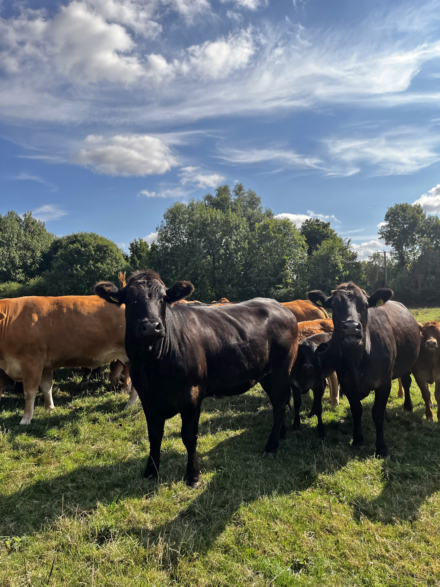
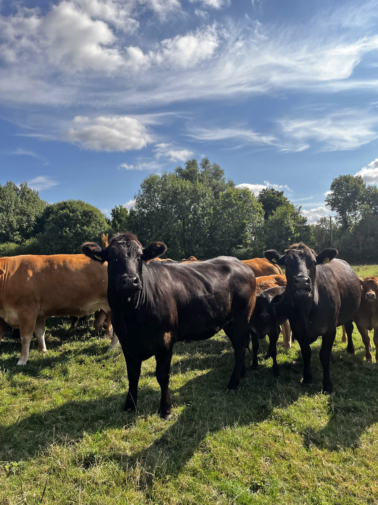

 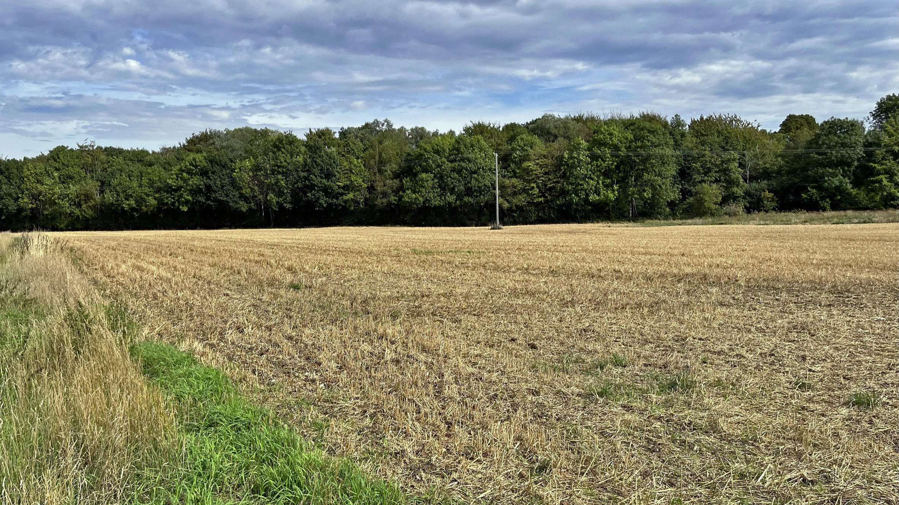
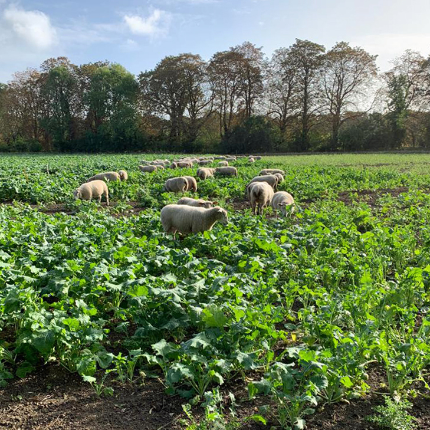
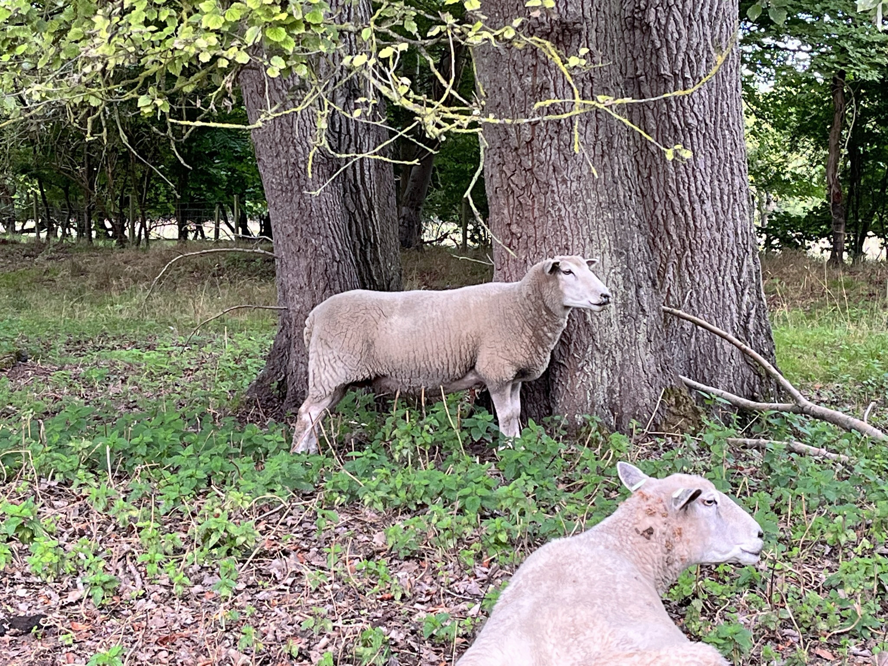
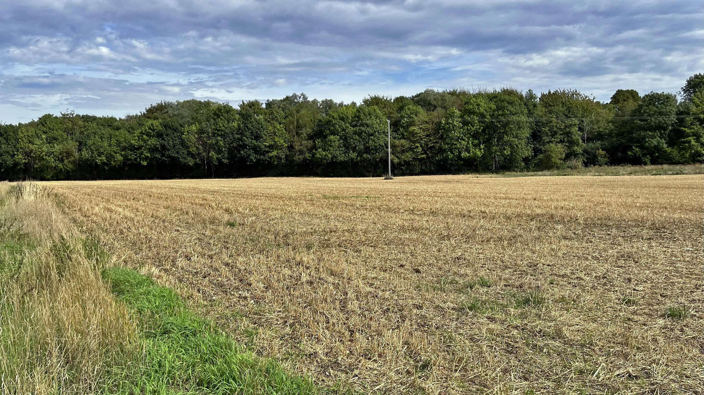
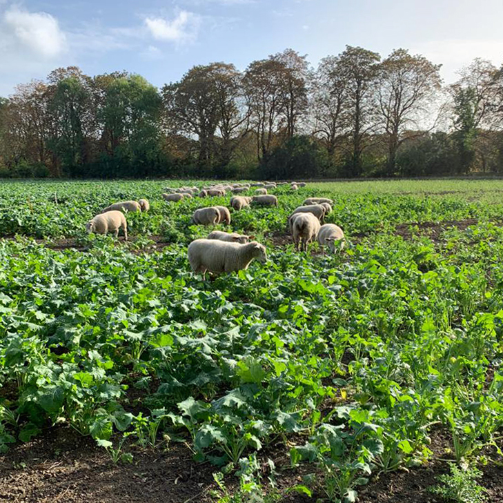
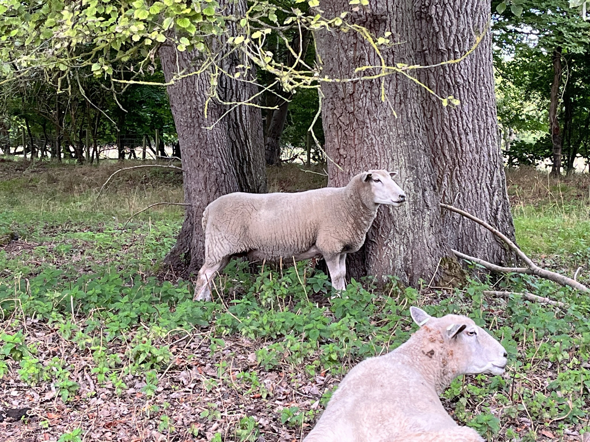

 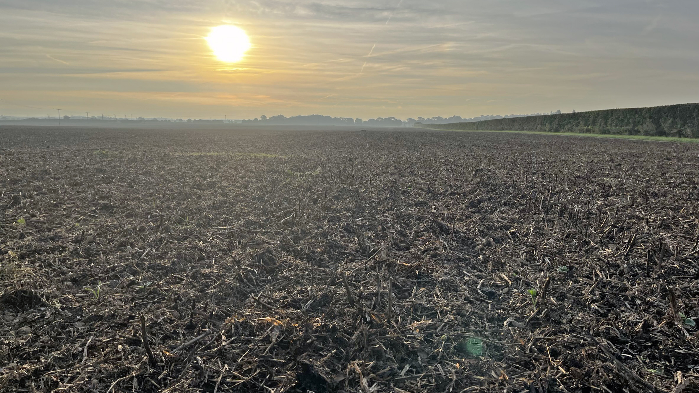
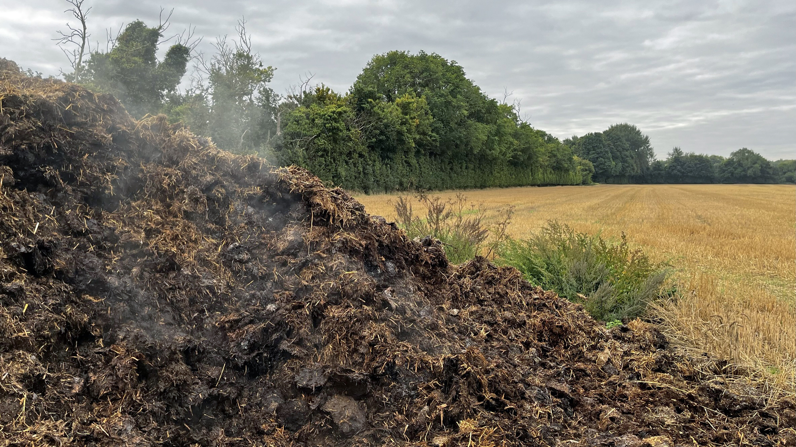
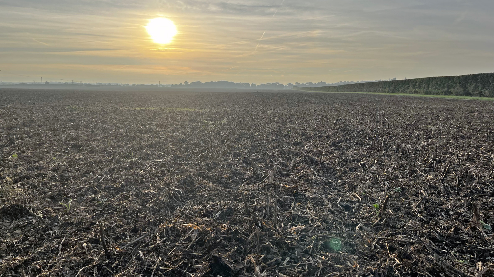
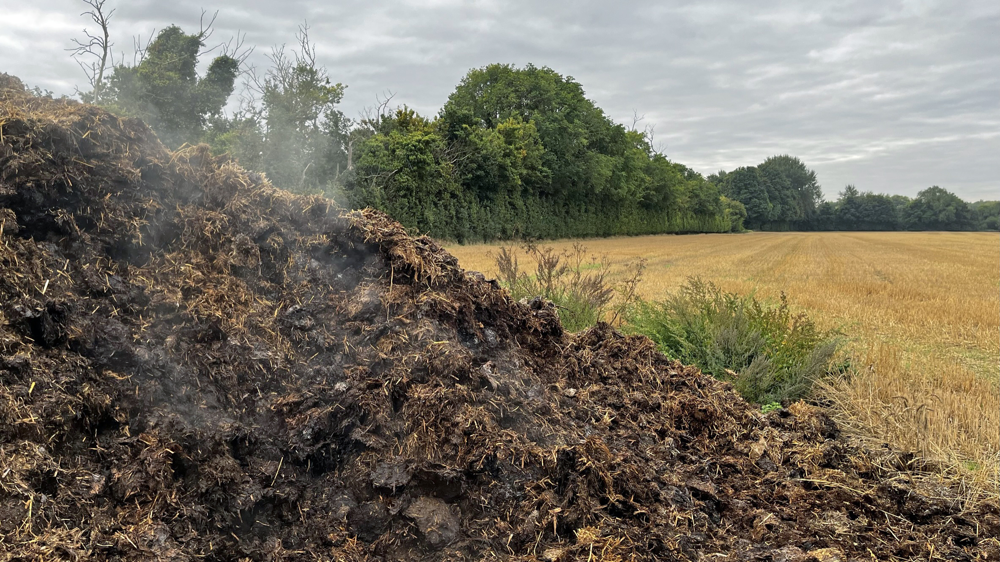


 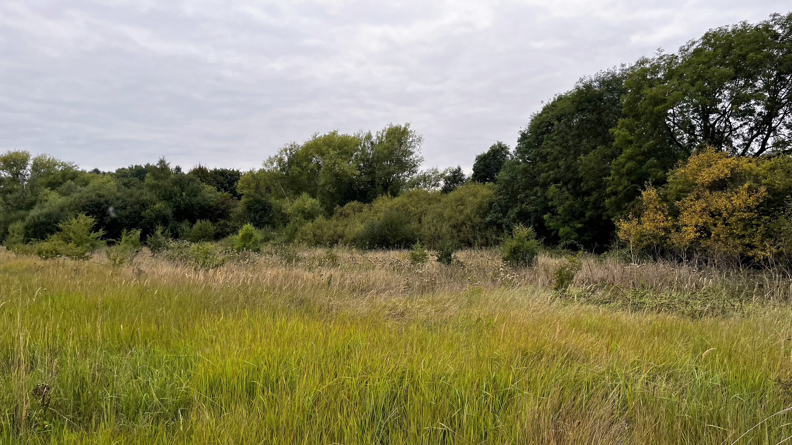
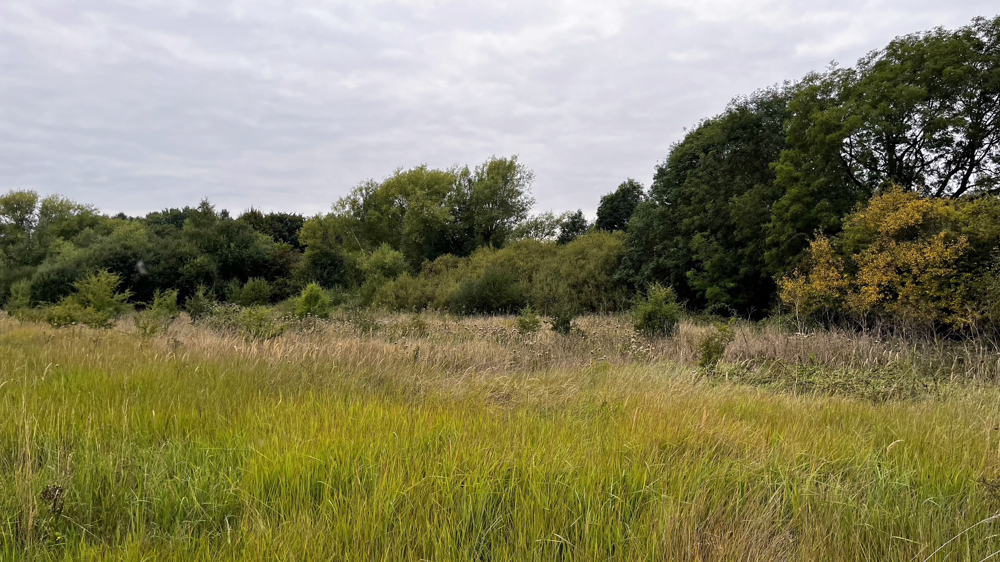